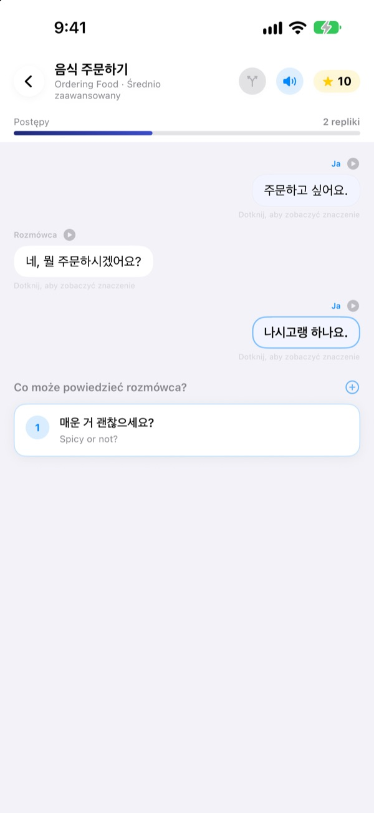
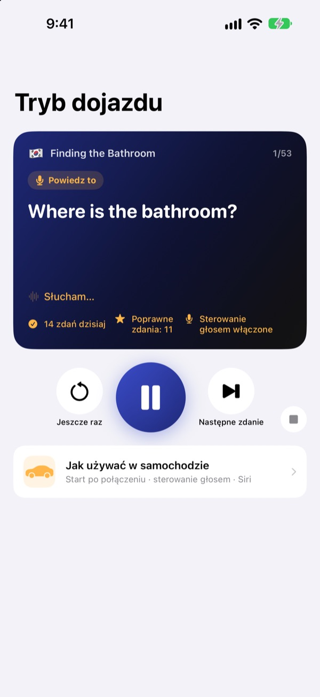
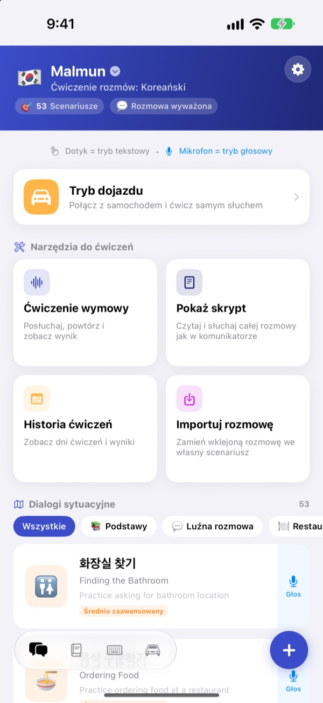
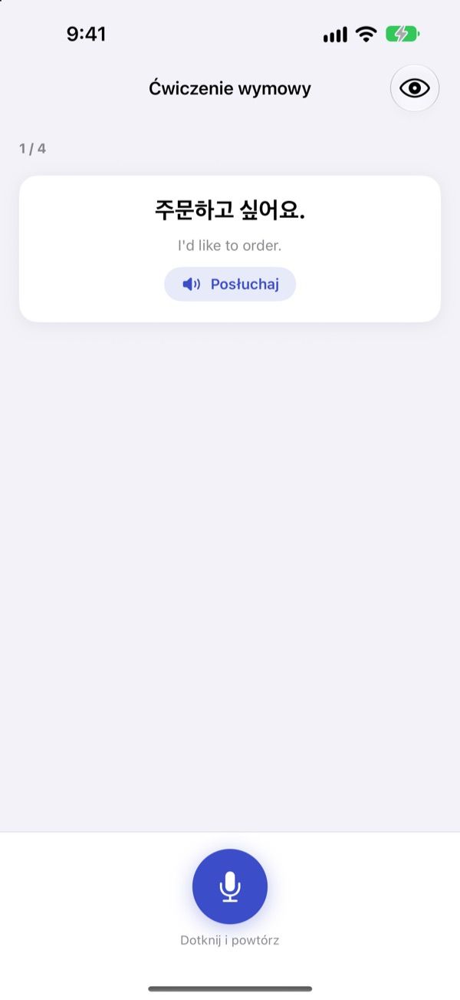

Koniec z zacinaniem się.
Odezwij się pierwszy.
Malmun to trener rozmowy, w którym każda wybrana odpowiedź prowadzi dialog w inną stronę. Ucz się koreańskiego, japońskiego, chińskiego, hiszpańskiego lub indonezyjskiego, a w samochodzie ćwicz tylko uszami i głosem.
Rozgałęzione rozmowy, ćwiczenie wymowy i słownictwo są darmowe.

Poprowadź rozmowę sam
To „Dzień dobry”, indonezyjska rozmowa prosto z aplikacji. Każde wybrane zdanie kieruje rozmowę gdzie indziej.
Znasz zdanie, ale zabrakło odpowiedzi?
W podręczniku rozmowy zawsze idą zgodnie ze scenariuszem. W życiu rozmówca odpowiada coś, czego się nie spodziewasz. Malmun pozwala wcześniej przejść wszystkie odgałęzienia rozmowy, więc następne zdanie masz gotowe, cokolwiek usłyszysz. Nawet droga do domu staje się czasem na ćwiczenia.
Ćwicz ze słuchu podczas jazdy
Tryb dojazdu gra z głośników samochodu przez Bluetooth lub CarPlay. Najpierw słyszysz znaczenie, po sygnale masz czas, żeby powiedzieć to sam, a potem odpowiedź pada raz wolno i raz w normalnym tempie.
Przewijaj i powtarzaj przyciskami na kierownicy albo mów next, again lub slower, gdy przyjdzie twoja kolej. Podczas komunikatów nawigacji odtwarzanie się zatrzymuje.

Wszystkie sytuacje z podróży i codzienności
Każdy język ma 53 dialogi sytuacyjne: podstawy, codzienne pogaduszki, restauracja, transport, lotnisko, hotel, zakupy, zwiedzanie i nagłe wypadki.
Jeśli uczysz się indonezyjskiego, jest tego więcej: 5 ręcznie napisanych small talków, 3 kursy jednego dnia po 6 scen z planem tygodnia i 100 słów na wyjazd służbowy.

Sprawdź, czy dobrze powiedziałeś
Ćwiczenie wymowy daje wynik i zaznacza kolorem słowa, które wyszły, i te, które umknęły.
W widoku skryptu cała rozmowa wygląda jak czat. Odsłuchaj ją w całości albo ukryj znaczenia i sprawdź się.

Start w trzech krokach
- 1
Wybierz język
Stuknij flagę u góry ekranu głównego. Zwroty i słówka zapisują się osobno dla każdego języka.
- 2
Otwórz rozmowę
Stukaj odpowiedzi w trybie tekstowym albo stuknij mikrofon i mów: tryb głosowy znajdzie najbliższą odpowiedź.
- 3
W aucie: tryb dojazdu
Połącz iPhone’a z samochodem i naciśnij odtwarzanie. Nie musisz patrzeć na ekran.
Sterowanie trybem dojazdu
- Kierownica: następny utwór
- Następne zdanie
- Kierownica: poprzedni utwór
- To samo zdanie jeszcze raz
- Przycisk odtwarzania
- Pauza i wznowienie
next·skip- Następne zdanie
again·repeat- Posłuchaj jeszcze raz
slower·faster- Zmień tempo czytania
next scene- Przejdź do następnej rozmowy
stop·pause- Zakończ ćwiczenie
- Siri: „Rozpocznij ćwiczenie w dojeździe w Malmun”
- Zacznij bez dotykania iPhone’a
Gdy aplikacja jest po polsku, komendy głosowe wypowiadasz po angielsku. Są słuchane tylko w twojej kolejce, po sygnale. Bieżące zdanie widać w informacjach o odtwarzaniu w samochodzie. CarPlay nie ma osobnego ekranu aplikacji.
Prawie wszystko jest za darmo. Malmun Pro odblokowuje resztę.
Za darmo
- Rozgałęziony small talk i kursy jednego dnia (indonezyjski)
- Dialogi sytuacyjne: podstawy i codzienne pogaduszki
- Tryb dojazdu, 3 sceny dziennie
- Wymowa, skrypt, import rozmów, historia ćwiczeń
- Moje zwroty, fiszki, klawiatura zwrotów
- Udostępnianie scenariuszy znajomym, scenariusze tworzone przez AI
Malmun Pro
- Wszystkie dialogi sytuacyjne: restauracja, transport, lotnisko, hotel, zakupy, zwiedzanie, nagłe wypadki
- Tryb dojazdu bez limitu
- Obejmuje wszystkie języki
Subskrypcja roczna albo jednorazowy zakup na zawsze
Ceny znajdziesz w aplikacji i w App Store. Subskrypcja roczna odnawia się automatycznie, jeśli nie anulujesz jej najpóźniej 24 godziny przed końcem okresu.
Częste pytania
Jakich języków mogę się uczyć?
Koreańskiego, japońskiego, chińskiego, hiszpańskiego i indonezyjskiego. Przyciski i menu są po polsku, ale znaczenia zdań i komendy głosowe są po angielsku. Dlatego samego angielskiego nie ma na liście.
Jak korzystać w samochodzie?
Połącz iPhone’a z autem przez Bluetooth lub CarPlay, otwórz tryb dojazdu i naciśnij odtwarzanie. Dźwięk idzie z głośników, a bieżące zdanie widać w sekcji Teraz odtwarzane. Możesz też powiedzieć Siri „Rozpocznij ćwiczenie w dojeździe w Malmun” albo raz ustawić automatyzację w aplikacji Skróty, żeby ćwiczenie ruszało po połączeniu z CarPlay (lub Bluetooth auta).
Czy mikrofon słucha cały czas?
Nie. Słucha tylko w twojej kolejce, po sygnale, przez mikrofon iPhone’a, a to, co usłyszy, jest przetwarzane na urządzeniu.
Moja wymowa nie jest rozpoznawana.
Rozpoznawanie mowy działa w języku, którego się uczysz. Spróbuj w cichszym miejscu i sprawdź, czy rozpoznawanie mowy dla tego języka jest pobrane na urządzenie.
Jak dodać klawiaturę?
Wejdź w Ustawienia ▸ Ogólne ▸ Klawiatura ▸ Klawiatury ▸ Dodaj nową klawiaturę i wybierz klawiaturę Malmun. Podczas pisania przełączysz się przyciskiem z globusem. Pełny dostęp nie jest potrzebny. Żeby pokazać mniej zwrotów, stuknij ikonę klawiatury w prawym dolnym rogu ekranu głównego ▸ Zarządzaj klawiaturą.
Nie widzę scenariusza udostępnionego przez znajomego.
Udostępnianie działa przez iCloud, więc oboje musicie być zalogowani do iCloud. Jeśli nadal go nie widać, zamknij aplikację całkowicie i otwórz ponownie.
Czego potrzebuję, żeby tworzyć scenariusze z AI?
Wpisz w aplikacji własny klucz API Anthropic i podaj temat, a powstanie nowa rozmowa. Wszystko inne działa bez klucza.
Jak anulować subskrypcję albo odzyskać pieniądze?
Płatności obsługuje Apple. Anulujesz w Ustawieniach iPhone’a ▸ Konto Apple ▸ Subskrypcje ▸ Malmun. Zwrotu pieniędzy żądasz od Apple na reportaproblem.apple.com.
Nowy iPhone i Pro zniknęło.
Zaloguj się tym samym Kontem Apple i w Malmun stuknij Ustawienia ▸ Malmun Pro ▸ Przywróć zakupy.
Gdzie zapisują się moje postępy?
Konto nie jest potrzebne. Dane zostają na urządzeniu i w twoim iCloud. Bez reklam i śledzenia, wysyłane są tylko anonimowe statystyki użycia i raporty o błędach. Błędy i pomysły można też zgłaszać w GitHub Issues (github.com/M1zz/IndonesianSmallTalk/issues).
Pytania albo uwagi? Napisz na leeo@kakao.com, użyj Ustawienia ▸ Wyślij opinię w aplikacji lub odezwij się na Instagramie: @lee25_ios.